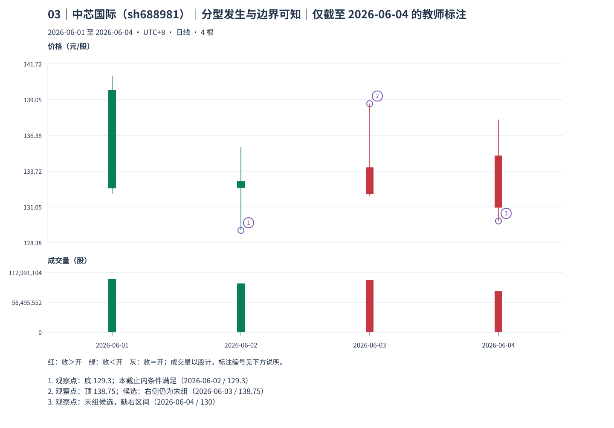
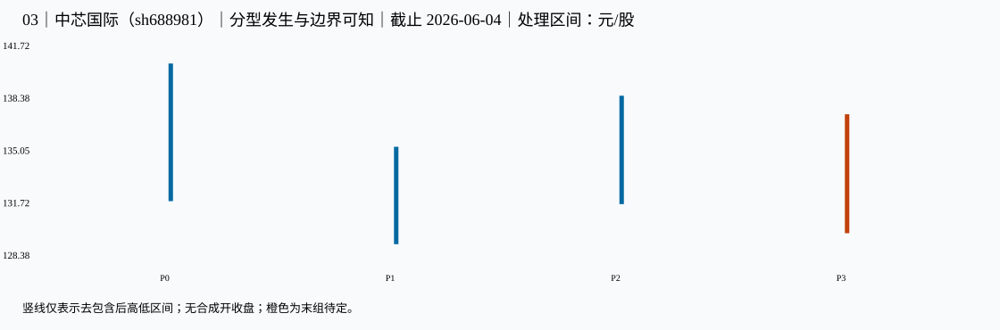

03｜中芯国际（sh688981）｜分型发生与边界可知｜本包讲解
教师讲解仅截止 2026-06-04；先保留同编号原答，逐小段核对、确认理解后再继续。
真实未复权日线；价格单位元/股（CNY/share），成交量单位股（shares），横轴按实际交易日顺序。窗口避开已知价格基准变化，其他公司行为及现金分红日历仍未穷尽核准；价格差不单独证明技术破位、经济损失或投资总回报。样本按教学需要事后选取，不用于估计模式频率。
声明起点 2026-06-01，首对 raw 0=[132.040,140.800]、raw 1（2026-06-02）=[129.300,135.500]，互不包含，高低共同向下。只按本窗口启动，未补造更早热身资料，也未绑定此前已确认段；左边界限制仍保留，首个笔端点不能自动作为真实段起点。
这一例实际算出了什么
选 底 P1，2026-06-02 的 129.3 元/股。相邻三组为 P0[132.04,140.8]、P1[129.3,135.5]、P2[131.85,138.75]；中间低 129.3<左右 132.04/131.85，中间高 135.5<左右 140.8/138.75，两项严格关系都满足。
极值发生 2026-06-02；右组首根到来、三组形成在 2026-06-03；再有独立后组时，known_at=2026-06-04，本截止状态 confirmed_at_cutoff。不能把后知的确认回填到极值当日。
同页 顶 P2，2026-06-03 的 138.75 元/股 的三组形成于 2026-06-04，但右组仍在窗口末端，known_at=未可知，仍待独立后组，状态 provisional_right_group。它与前者的可知程度不同；这只是局部关系，尚非买卖指令。
known_at 是本窗口、给定口径下边界证据齐备之日，空值表示尚待；confirmed_at_cutoff＝本截止内分型满足；provisional_right_group＝右组尚可吸收；provisional_fractal＝笔端点仍待；latest_endpoint_revisable＝末端仍可修订；accepted_at_cutoff＝本次接受。所有状态均非永久确认。
对照原图、标注和处理区间



展开本截止的逐根映射、分型、笔、拒绝与修订证据
1 原始 K 线 → 处理区间
| 原始号 | 日期 | 开 | 高 | 低 | 收 | 映射到 |
|---|---|---|---|---|---|---|
| 0 | 2026-06-01 | 139.760 | 140.800 | 132.040 | 132.440 | P0 |
| 1 | 2026-06-02 | 132.980 | 135.500 | 129.300 | 132.480 | P1 |
| 2 | 2026-06-03 | 132.000 | 138.750 | 131.850 | 134.000 | P2 |
| 3 | 2026-06-04 | 131.000 | 137.570 | 130.000 | 134.880 | P3 |
| 处理号 | 原始号 | 日期范围 | [低,高] | 低点实际日 | 高点实际日 | 合并方向 | 形成/末次修改 | 右边界已知日 |
|---|---|---|---|---|---|---|---|---|
| P0 | [0] | 2026-06-01—2026-06-01 | [132.04,140.8] | 2026-06-01 | 2026-06-01 | 无合并 | 2026-06-01 | 2026-06-02 |
| P1 | [1] | 2026-06-02—2026-06-02 | [129.3,135.5] | 2026-06-02 | 2026-06-02 | 无合并 | 2026-06-02 | 2026-06-03 |
| P2 | [2] | 2026-06-03—2026-06-03 | [131.85,138.75] | 2026-06-03 | 2026-06-03 | 无合并 | 2026-06-03 | 2026-06-04 |
| P3 | [3] | 2026-06-04—2026-06-04 | [130,137.57] | 2026-06-04 | 2026-06-04 | 无合并 | 2026-06-04 | 末组仍可吸收 |
2 分型：发生与知道分列
| 顶/底 | 中心/三组 | 极值日/价 | 三组最早形成日 | 右组末次吸收 | 边界已知日 | 截止状态 |
|---|---|---|---|---|---|---|
| bottom | P1: [0, 1, 2] | 2026-06-02: 129.3 | 2026-06-03 | 2026-06-03 | 2026-06-04 | confirmed_at_cutoff |
| top | P2: [1, 2, 3] | 2026-06-03: 138.75 | 2026-06-04 | 2026-06-04 | 尚无独立后组 | provisional_right_group |
3 严格笔与拒绝项
| 笔号/方向 | 起点日/价 | 终点日/价 | 处理中心间距 | 全范围 | 分型证据齐备日 | 状态 |
|---|
| 起点 | 候选终点 | 中心距 | 拒绝原因 |
|---|---|---|---|
| 2026-06-02 | 2026-06-03 | 1 | spacing |
4 同类极值更新记录
| 旧端点 | 新端点 | 修订首次观察日 | 新端点分型确认日 | 原因 |
|---|
仅本包计算证据 JSON；M11；M12。本图不产生已完成线段、中枢或收益证明。
本包核对完毕后，进入下一份原图；仍须先保存下一包自己的回答。